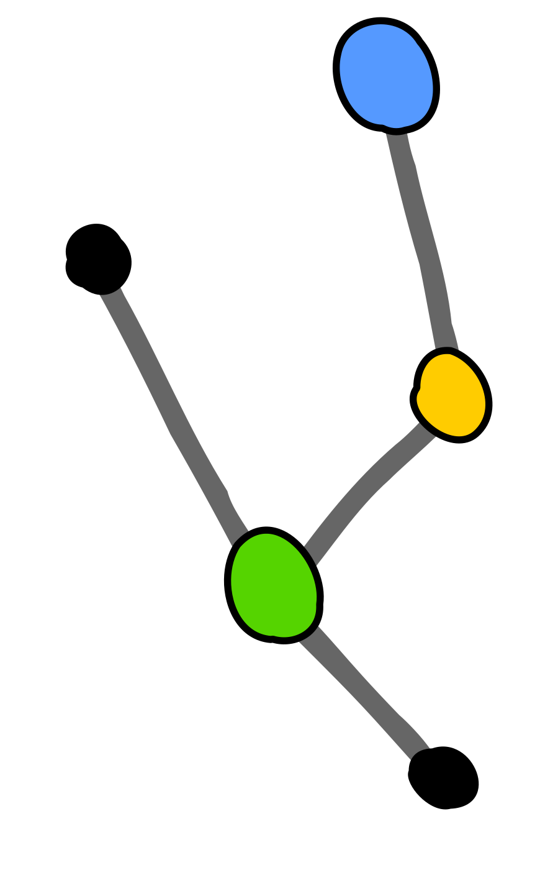

Atomistic computer simulations of the ribosome


„Prediction is very difficult, especially if it’s about the future.“

Forces are calculated using simple functions using large libraries of parameters.
Atomistic computer simulations
Numerical integration of Newton's equations of motion using an empirical all-atom potential.

Three challenges for MD simulations

Co-translational folding of VemP
H. Grubmüller group (MPI-NAT Göttingen)
S. M. Vaiana group (Arizona State Uni)
The secondary structure of VemP in the ribosome tunnel
is driven by the tunnel, simulations and CD spectroscopy suggests.
Decoding of non-standard genetic code
M. Eliáš group (University of Ostrava)
Why does the stop-codon UAG decodes glutamine in certain flagellate?
The stop-to-sense re-assignemnt can be explained by sequence divergence of
the flagellate's release factor.

Long-range allostery within the ribosome
H. McGrath's talk
From simulation data, we can construct a robust predictor of the PDF presence or absence on the ribosome surface.
Further reading
Bock, Gabrielli, Kolář, Grubmüller (2023): PMID: 36719969
Bock, Kolář, Grubmüller (2018): PMID: 29202442
Kolář (2022): Kotranslační děje aneb první okamžiky života proteinu, Chemické listy
http://mhko.science/contact
http://mhko.science/cssb-2023